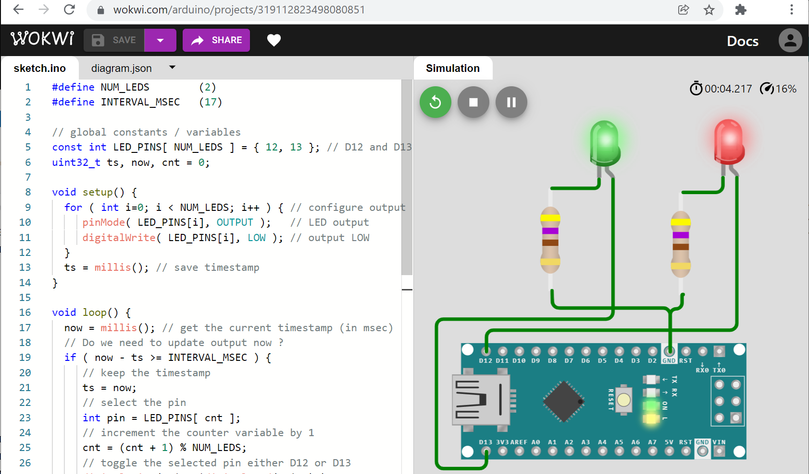

Arduino-FreeRTOS for AVR (Part 1)#
บทความนี้ (ตอนที่ 1) แนะนำการเริ่มต้นใช้งาน FreeRTOS Library สำหรับบอร์ดไมโครคอนโทรลเลอร์ Arduino ที่ใช้ชิป 8-bit Atmel AVR (เช่น บอร์ด Uno | Nano | MEGA2560) และใช้ซอฟต์แวร์ Arduino IDE ในการเขียนโค้ด รวมถึงสาธิตการจำลองการทำงานด้วย Web-based Wokwi AVR Simulator
Keywords: Arduino, 8-bit AVR, RTOS, FreeRTOS, Wokwi Simulator
▷ การเรียนรู้ FreeRTOS ด้วยบอร์ด Arduino#
โดยทั่วไปแล้ว ระบบปฏิบัติการเวลาจริง หรือ "เรียลไทม์-โอเอส" (Real-Time OS: RTOS) จะเหมาะสำหรับการนำไปใช้งานร่วมกับบอร์ดไมโครคอนโทรลเลอร์ 32 บิต แต่ก็มี RTOS ที่มีขนาดเล็ก (Small Memory Footprint) และใช้งานกับชิปไมโครคอนโทรลเลอร์ขนาด 8 บิต ได้เช่นกัน หนึ่งในตัวเลือกก็คือ FreeRTOS และก็เป็น RTOS ประเภท Open Source ที่ได้รับความนิยมแพร่หลาย
เนื่องด้วยอุปกรณ์ฮาร์ดแวร์และซอฟต์แวร์ของ Arduino ที่เข้าถึงได้ง่าย และมีการใช้งานอย่างแพร่หลายสำหรับคนทั่วไป จึงเหมาะสำหรับผู้ที่สนใจอยากจะลองศึกษาการหลักการทำงาน และฝึกใช้งานระบบปฏิบัติการแบบ RTOS
ถัดไปจะกล่าวถึง ขั้นตอนการติดตั้ง FreeRTOS (ทดลองใช้เวอร์ชัน v10.4.4) สำหรับ Arduino IDE และการเขียนโปรแกรมแบบมัลติทาสก์ในเบื้องต้น เพื่อนำไปทดลองกับบอร์ดไมโครคอนโทรลเลอร์ หรือจำลองการทำงานของโค้ดตัวอย่าง
▷ ข้อดีและข้อเสียของการเรียนรู้ FreeRTOS ด้วยบอร์ด Arduino#
การเลือกใช้บอร์ด Arduino ที่ใช้ชิปไมโครคอนโทรลเลอร์ 8 บิต AVR อย่างเช่น บอร์ด Arduino Uno หรือ Arduino Nano เพื่อนำมาใช้สำหรับการเรียนรู้และเขียนโค้ดทดลองใช้คำสั่ง FreeRTOS API มีข้อดีดังนี้
- สามารถใช้ซอฟต์แวร์อย่างเช่น WokWi AVR Simulator ซึ่งเป็น Web-based App สำหรับการเขียนโค้ดและจำลองการทำงานเสมือนจริงได้ และรองรับการนำเข้าไลบรารี FreeRTOS สำหรับ AVR ได้ด้วย
- สามารถซื้อบอร์ดไมโครคอนโทรลเลอร์ดังกล่าวได้ทั่วไป ราคาไม่แพงนัก หากต้องการทดสอบการทำงานของโค้ดกับอุปกรณ์จริง
- สามารถเขียนโปรแกรมโดยใช้คำสั่งต่าง ๆ ของ Arduino API ทำให้ง่ายต่อการเขียนโค้ด มากกว่าการใช้คำสั่งของ API จากไลบรารี หรือ C/C++ SDK ของผู้ผลิตชิปไมโครคอนโทรลเลอร์ หรือเขียนโค้ดแบบ Bare-Metal
- สามารถเขียนโค้ด Arduino Sketch เพื่อคอมไพล์และแปลงให้เป็นไฟล์ .hex โดยใช้ซอฟต์แวร์ IDE ที่เป็น Open Source เช่น Arduino IDE หรือ VS Code IDE + PlatformIO และนำเข้า FreeRTOS เหมือนไลบรารีสำหรับ Arduino โดยทั่วไป
แต่หากจะเลือกใช้บอร์ดไมโครคอนโทรลเลอร์อย่างเช่น ESP32 แทนบอร์ด Arduino ก็มีข้อดี ดังนี้
- WokWi AVR Simulator รองรับการใช้งานบอร์ด ESP32 ดังนั้นจึงจำลองการทำงานของโค้ด รวมถึงการใช้คำสั่งของ FreeRTOS ได้ด้วย
- สามารถเขียนโค้ดโดยใช้คำสั่งพื้นฐานของ Arduino API ได้เช่นกัน
- ตัวชิปไมโครคอนโทรลเลอร์ Espressif ESP32 SoC มีความเร็วในการประมวลผลสูงกว่า และมีหน่วยความจำมากกว่า AVR ดังนั้นจึงรองรับการเขียนโค้ดที่มีความซับซ้อน หรือกรณีที่โค้ดมีขนาดใหญ่ขึ้น แต่บอร์ด ESP32 ก็อาจมีราคาที่สูงกว่าบอร์ด Arduino
▷ การติดตั้ง FreeRTOS สำหรับ Arduino IDE#
ในการเตรียมซอฟต์แวร์เพื่อเขียนโค้ด ขั้นตอนแรกให้เปิดใช้งาน Arduino IDE
(หากยังไม่เคยใช้งาน ให้ดาวน์โหลดและติดตั้งซอฟต์แวร์ก่อน) แล้วไปที่เมนู
Sketch > Include Library > Manage Libraries
ค้นหาไลบรารีด้วยคำว่า freertos จะปรากฏรายการตามรูปภาพตัวอย่าง
จากนั้นเลือกเวอร์ชันล่าสุดแล้วกดปุ่มคลิก Install
รูป: ตัวอย่างการค้นหาและติดตั้ง FreeRTOS library
ไลบรารีสำหรับ FreeRTOS มีหลายตัวเลือก แต่เราจะเลือกใช้ไลบรารีที่ใช้งานได้สำหรับบอร์ดไมโครคอนโทรลเลอร์ Arduino ซึ่งใช้ชิป Atmel AVR (ผู้พัฒนาไลบรารีคือ Richard Barry)
▷ ตัวอย่างโค้ด: Blinking LEDs#
การใช้งานในระดับพื้นฐานที่เกี่ยวข้องกับ RTOS คือ การเขียนโปรแกรมแบบมัลติทาสก์ (Multi-Tasking) คือ มีการแบ่งงานของโปรแกรมออกเป็นงานย่อย หรือ ทาสก์ (Tasks) ให้ทำงานอิสระจากกัน หรือทำงานร่วมกันก็ได้
แต่ก่อนที่จะสาธิตการสร้างทาสก์โดยใช้ FreeRTOS API ลองมาดูโค้ดตัวอย่างแรกก่อนซึ่งเป็น Arduino Sketch ที่มีเพียงทาสก์หลัก (Main Task) ที่ทำให้เกิดการสลับสถานะลอจิก LOW และ HIGH ที่ขาเอาต์พุต D12 และ D13 ตามลำดับ (มี 2 ช่องสัญญาณเอาต์พุต)
ในโค้ดตัวอย่างนี้ ได้ใช้คำสั่ง millis() ของ Arduino API
เพื่อคอยอ่านเวลาของระบบ (หน่วยเป็นมิลลิวินาที) จากนั้นจะนำไปเทียบกับเวลาอ้างอิงที่บันทึกเอาไว้
(เรียกว่า Saved Timestamp: ตัวแปร ts)
ถ้าอ่านเวลาปัจจุบัน (ได้ตัวเลขในหน่วยเป็น ms และเก็บค่าไว้ในตัวแปร now)
ลบด้วยเวลาอ้างอิงที่ได้บันทึกไว้ (ts) จะได้ค่าผลต่างในเชิงเวลา
หากผลต่างที่ได้มากกว่าหรือเท่ากับช่วงเวลาที่กำหนดไว้ (INTERVAL_ms) ในกรณีนี้คือ 17 มิลลิวินาที
จะต้องสลับสถานะลอจิกของเอาต์พุตหนึ่งครั้ง
การสลับสถานะลอจิกสำหรับขา I/O (ใช้เป็นเอาต์พุต) จะเกิดขึ้นกับหนึ่งขาเอาต์พุตเท่านั้นในแต่ละครั้ง และสลับช่วงเวลากัน
และให้อัปเดทและบันทึกเวลาอ้างอิงล่าสุดไว้ในตัวแปร ts
#define NUM_LEDS (2) // number of LEDs
#define INTERVAL_ms (17) // delay in msec
// global constants / variables
const int LED_PINS[ NUM_LEDS ] = { 12, 13 }; // D12 and D13
uint32_t ts, now;
uint8_t cnt = 0;
void setup() {
for ( int i=0; i < NUM_LEDS; i++ ) { // configure output pins
pinMode( LED_PINS[i], OUTPUT ); // LED output
digitalWrite( LED_PINS[i], LOW ); // output LOW
}
ts = millis(); // save the current timestamp
}
void loop() {
now = millis(); // get the current timestamp (in ms)
// Do we need to update output now ?
if ( now - ts >= INTERVAL_ms ) { // check next update time
// keep the timestamp
ts = now;
// select the pin
int pin = LED_PINS[ cnt ];
// increment the counter variable by 1
cnt = (cnt + 1) % NUM_LEDS;
// toggle the selected pin either D12 or D13
digitalWrite( pin, !digitalRead( pin ) );
}
}
ถ้าทดสอบกับฮาร์ดแวร์จริง ใช้บอร์ด Arduino เช่น Uno หรือ Nano
และวัดสัญญาณเอาต์พุตด้วยเครื่องออสซิลโลสโคป จะเห็นว่า คลื่นสัญญาณเอาต์พุตที่ขา
D12 และ D13 จะเป็นคลื่นสี่เหลี่ยม มีความกว้างของพัลส์ (Pulse Widths)
ค่อนข้างคงที่ ครึ่งหนึ่งของคาบ (Half Period) ของแต่ละสัญญาณกว้าง ~34 ms (มิลลิวินาที)
รูป: คลื่นสัญญาณที่ได้จากการทำงานของโค้ดตัวอย่างแรก (TIME/DIV = 20 ms)
คำถาม: ทำไมจึงเลือกการทำให้ LED กระพริบ มาเป็นตัวอย่าง ?
- I/O Toggle เป็นการทำงานที่จะเกิดขึ้นซ้ำ ดังนั้นจึงเป็นตัวแทนของการทำงานเสมือนโปรแกรมย่อย หรือ ทาสก์ (Task) ที่เกิดซ้ำต่อเนื่องกันไป (Cyclic) และมีการเว้นช่วงเวลาคงที่ หรือเกิดขึ้นตามคาบเวลาคงที่ (Periodic)
- ถ้ามีมากกว่าหนึ่งงาน เช่น ทำให้เกิดการสลับสถานะที่ขาเอาต์พุตมากกว่าหนึ่งขา ก็เป็นการกำหนดงานย่อยหลายงาน (Multi-Tasking) ที่ทำงานอิสระจากกัน และอาจเกิดขึ้นไปพร้อม ๆ กันได้ (Concurrent Independent Tasks)
- พฤติกรรมการทำงานของทาสก์ สามารถสังเกตได้ที่ขา I/O เช่น สามารถดูว่า เกิดการเปลี่ยนสถานะหรือไม่ และถ้าใช้เครื่องออสซิลโลสโคปวัดสัญญาณเอาต์พุต ก็จะเห็นการเปลี่ยนแปลงเชิงเวลาที่ขา I/O แต่ละขาได้ในรูปของกราฟสัญญาณ เช่น สามารถทราบได้ว่า ขอบขาขึ้นหรือขาลง (Rising or Falling Edge) เกิดขึ้นเมื่อใด และสามารถวัดความกว้างของพัลส์หรือคาบได้ เป็นต้น
▷ ตัวอย่างโค้ด: LED Blink with Single FreeRTOS Task#
ในตัวอย่างนี้ ถ้าเราลองเขียนโค้ด Arduino Sketch ใหม่ โดยใช้วิธีการสร้างทาสก์ขึ้นมาใหม่
จำนวน 1 ทาสก์ และใช้คำสั่งต่าง ๆ ของ FreeRTOS Library แทนการทำงานในฟังก์ชัน loop(){…}
ก็สามารถทำได้ดังนี้
// include the FreeRTOS library for AVR
#include <Arduino_FreeRTOS.h>
#define NUM_LEDS (2)
const int LED_PINS[ NUM_LEDS ] = { 12, 13 };
void task( void *pvParameters ); // task entry function
void setup() {
for ( int i=0; i < NUM_LEDS; i++ ) {
pinMode( LED_PINS[i], OUTPUT ); // configure output pins
digitalWrite( LED_PINS[i], LOW ); // LED output LOW
}
// create a new task
// see: https://www.freertos.org/a00125.html
xTaskCreate( task, "Task", 128, NULL, tskIDLE_PRIORITY+1, NULL );
// Note the task scheduler is started automatically.
}
void loop() {
/* empty */
}
void task( void *pvParameters ) { // task-entry function
uint8_t cnt = 0; // a counter variable, increment by 1
while(1) {
int pin = LED_PINS[ cnt ]; // select the pin
cnt = (cnt+1) % NUM_LEDS;
// toggle the selected pin
digitalWrite( pin, !digitalRead( pin ) );
vTaskDelay( pdMS_TO_TICKS(17) ); // task delay for 1 tick
}
}
ฟังก์ชันสำหรับการทำงานของทาสก์ดังกล่าว ซึ่งก็คือ
void task( void * ){…}
ทำหน้าที่สลับสถานะของเอาต์พุตที่ขาหมายเลข D12 หรือ D13 และมีการกำหนดคุณสมบัติเพื่อสร้างทาสก์ดังนี้
- ชื่อทาสก์ (Task Name) ที่เป็นข้อความแบบ String ในภาษา C
- ขนาดของหน่วยความจำแบบ Stack สำหรับของแต่ละทาสก์ (Task Stack Depth) (ไม่ใช่จำนวนไบต์ และเป็นความจุสำหรับการเก็บพอยน์เตอร์) ถ้าตั้งค่าไว้น้อยเกินไป และฟังก์ชันของทาสก์ทำงานแล้วเรียกฟังก์ชันซ้อนกันหลายครั้ง อาจจะทำให้เกิด Stack Overflow ได้ แต่ถ้าตั้งค่ามากเกินไป ก็อาจเป็นใช้ SRAM ไม่เหมาะสม
- พารามิเตอร์สำหรับทาสก์ (Task Parameter) ที่จะนำไปใช้กับฟังก์ชันของทาสก์ได้
ถ้าไม่มี ก็ให้ระบุเป็น
NULL - ระดับความสำคัญของทาสก์ (Task Priority Level) เป็นเลขจำนวนเต็มบวก
โดยทั่วไปก็จะให้มีค่าสูงกว่า ระดับความสำคัญของทาสก์ที่เรียกว่า Idle Task
ของ FreeRTOS (
tskIDLE_PRIORITYซึ่งมีค่าเท่ากับ 0) - ในฟังก์ชัน
loop(){...}ไม่มีคำสั่งใด ๆ และส่งต่อการทำงานให้ Idle Task
ข้อสังเกต:
- Idle Task เป็นทาสก์ที่จะถูกเรียกโดยตัวจัดการงานของ FreeRTOS เมื่อไม่มีทาสก์ใดพร้อมที่จะทำงาน
- พอยน์เตอร์สำหรับทาสก์ (เรียกว่า Task Handle) ใช้อ้างอิงทาสก์ที่จะถูกสร้างขึ้นใหม่
ถ้าไม่ต้องการ ก็ให้ระบุเป็น
NULL - ภายในฟังก์ชันสำหรับทาสก์ มีประโยคคำสั่ง
while(1){…}ดังนั้นทาสก์จะทำงานซ้ำไปเรื่อย ๆ และทาสก์ก็สามารถหยุดการทำงานชั่วคราวได้ตามระยะเวลาที่ต้องการ เช่น ถ้ามีการทำคำสั่งvTaskDelay()
การหน่วงเวลาของทาสก์ จะใช้วิธีเรียกฟังก์ชัน vTaskDelay() ของ FreeRTOS
และระบุค่าเป็นจำนวนครั้งของการนับโดย Tick Timer ของ FreeRTOS
และเมื่อเกิด Tick Event ในแต่ละครั้ง จะเกิดการจัดลำดับทาสก์ที่พร้อมจะทำงาน
และเลือกทาสก์ที่จะได้ช่วงเวลาในการทำงานถัดไป
การตัดสินใจและกำหนดว่าทาสก์ใดจะได้ทำงานเป็นหน้าที่ของ Task Scheduler ของ FreeRTOS
ในกรณีของ Arduino (Atmel AVR) อัตราการนับขึ้นหรือความถี่ของ Tick Timer จะถูกตั้งค่าไว้เท่ากับ 62 Hz (default) หรือมีคาบในการนับแต่ละครั้งเท่ากับ 16 มิลลิวินาที (ms) โดยประมาณ และอาศัยการทำงานของวงจรภายใน WDT (Watchdog Timer) ทำหน้าที่เป็น OS Timer
ดังนั้นการทำคำสั่ง vTaskDelay( pdMS_TO_TICKS(17) ) เป็นการหน่วงเวลาไว้เท่ากับ
1 OS Tick และคำสั่ง pdMS_TO_TICKS(..) จะใช้สำหรับแปลงช่วงเวลา
(หน่วยเป็นมิลลิวินาที) ให้เป็นจำนวนนับตามจังหวะของ Tick Timer ในกรณีนี้ 17 มิลลิวินาที จะได้เท่ากับ
1 OS Tick (= (int)(17/16) ได้ค่าเลขจำนวนเต็มเท่ากับ 1)
การทำคำสั่ง vTaskDelay() จะทำให้ทาสก์ดังกล่าวหยุดทำงานชั่วคราว
โดยเปลี่ยนจากสถานะ "กำลังทำงาน" (RUNNING) ไปเป็นสถานะ "หยุด" (BLOCKED)
และจะกลับมาอยู่ในสถานะ "พร้อมทำงาน" (READY)
เมื่อเวลาผ่านไปตามที่กำหนดไว้ เพื่อรอจัดลำดับให้ทำงานอีกครั้งในสถานะ "กำลังทำงาน" (RUNNING) ตามลำดับ
รูป: ผังแสดงการเปลี่ยนสถานะของทาสก์สำหรับ FreeRTOS (State Transition Diagram)
ทาสก์ที่ถูกสร้างและจัดการโดย FreeRTOS Kernel จะอยู่ในสถานะได้แก่ { READY, RUNNING, BLOCKED, SUSPENDED }
เมื่อทาสก์ถูกสร้างขึ้นแล้ว จะอยู่ในสถานะ READY และถ้าได้รับการเลือกจาก Task Scheduler ให้ทำงานในลำดับถัดไป ทาสก์ก็จะเปลี่ยนเป็นสถานะ RUNNING หรือเปลี่ยนเป็นสถานะอื่นได้หลังจากนั้น เช่น
- เปลี่ยนเป็น BLOCKED เช่น เมื่อทำสั่ง
vTaskDelay()หรือ รอเงื่อนไขเหตุการณ์บางอย่างที่จะเกิดจากการประสานการทำงานระหว่างทาสก์ - เปลี่ยนเป็น READY เช่น เมื่อทำคำสั่ง
taskYIELD()หรือ ถูกหยุดโดยการแทรกกลางคัน - เปลี่ยนเป็น SUSPENDED เช่น เมื่อมีการทำคำสั่ง
vTaskSuspened()เป็นต้น
รูป: คลื่นสัญญาณที่ได้จากการทำงานของโค้ดตัวอย่างที่ 2
ข้อสังเกต:
- ระยะเวลาของ 1 OS Tick ที่เกิดจากการทำงานของวงจร WDT Oscillator
ภายในชิป AVR ซึ่งถูกตั้งค่าการทำงานไว้โดย FreeRTOS อาจมีความกว้างไม่เท่ากับ 16ms
(WDT Period เมื่อให้บิต
WDP[3..1]="000"สำหรับ WDT Prescaler) ตามที่ระบุไว้ใน Datasheet ซึ่งเกิดจากความไม่แม่นยำของวงจร (Watchdog Timer Inaccuracy) - จากรูปสัญญาณที่ได้จากการวัดด้วยเครื่องออสซิลสลโคป หนึ่งคาบของสัญญาณได้เท่ากับ 67.60ms ดังนั้นจะได้ค่าประมาณ 16.9ms per tick (= 67.60ms / 4 ticks) ซึ่งใกล้เคียงกับค่าของ 1 OS Tick
วงจร WDT ของ AVR ทำงานที่ความถี่ 128kHz แต่ความถี่จริง อาจอยู่ที่ประมาณ 120kHz (5Vdc / 25 deg.C) การเกิดอินเทอร์รัพท์ จะต้องนับครบรอบเท่ากับ 2048 cycles หรือประมาณ ~17ms (= 2048 / 120kHz)
FreeRTOS มีการทำงานแบบ Preemptive Scheduling นอกจากจะต้องมีการกำหนดระดับความสำคัญของทาสก์แล้ว จะต้องมีการใช้งาน Hardware Timer เป็นตัวนับตามจังหวะของสัญญาณ Clock และเมื่อทำงานจะสร้างอินเทอร์รัพท์ให้เกิดขึ้น (Tick Interrupt) เช่น ทุก 1 มิลลิวินาที หรือความถี่ 1kHz (เรียกว่า Tick Rate) และมีการอัปเดทตัวแปร Tick Counter (เพิ่มค่าตัวแปรครั้งละหนึ่ง)
ถ้าใช้ไมโครคอนโทรลเลอร์ที่มีซีพียู 32 บิต ตระกูล ARM Cortex-M วงจรภายใน SysTick Timer ขนาด 24 บิต จะถูกใช้เป็นตัวนับตามจังหวะ แต่ในกรณีของ AVR เนื่องจากไม่มี SysTick Timer
ถ้าไม่ต้องการใช้ Timer ขนาด 8 บิต หรือ 16 บิต (Timer0, Timer1, Timer2) ซึ่งอาจจะถูกใช้งานไปแล้วสำหรับการทำงานของ Arduino ก็สามารถใช้ Watchdog Timer (WDT) เป็นตัวนับ
ในกรณี Arduino port of FreeRTOS (ported by Richard Barry) แต่มีข้อเสียคือ ค่าของ Tick Rate ในการทำงานของ Task Scheduler จึงไม่สูงมาก และมีค่าประมาณ 1000ms / 16ms = ~62Hz (โดยประมาณ)
▷ การจำลองการทำงานด้วย Wokwi Simulator#
หากต้องการทดลองรันโค้ดโดยไม่ใช้อุปกรณ์ฮาร์ดแวร์จริง ก็สามารถใช้งาน Wokwi Simulator โดยเปิดเว็บเบราว์เซอร์ไปที่ https://Wokwi.com/arduino/projects
เริ่มต้นด้วยการสมัครเข้าใช้งาน (SignIn) จากนั้นให้สร้างโปรเจกต์ใหม่ "YOUR PROJECTS > + NEW PROJECT" เลือกบอร์ดที่จะใช้งาน เช่น Arduino Uno | Nano | MEGA2560 เป็นต้น เมื่อเลือกบอร์ดที่จะใช้งานแล้ว จะมีการสร้างโปรเจกต์ใหม่ โดยใช้ Arduino Template ของ Wokwi จากนั้นให้บันทึกการเปลี่ยนแปลง โดยกดปุ่ม "SAVE" ก่อนทำขั้นตอนถัดไป
รูป: การสร้างโปรเจกต์ใหม่ในหน้าต่างของ Wokwi Simulator เพื่อเขียนโค้ด Arduino Sketch สำหรับบอร์ด Arduino Nano (328P)
หากสังเกตดู จะเห็นว่า มี Tab ที่เปิดไฟล์ไว้แล้ว เช่น
ไฟล์ sketch.ino สำหรับเขียนโค้ด และไฟล์ diagram.json
สำหรับกำหนดคุณสมบัติต่าง ๆ ของ Circuit Diagram
ผู้ใช้สามารถเปลี่ยนชื่อไฟล์ sketch.ino โดยเลือกจากเมนูคำสั่ง "Rename"
หรือ สร้างไฟล์เพิ่มสำหรับโปรเจกต์ จากเมนูคำสั่ง "+ New file..." เป็นต้น
ในบริเวณสำหรับการต่อวงจรเสมือนจริง ให้กดปุ่ม + เพื่อเพิ่มตัวต้านทาน (Register) และไดโอดเปล่งแสง (LED) ให้นำมาต่ออนุกรมกัน จำนวน 2 ชุด แล้วลากสายไฟ (Wiring) เชื่อมต่อขาของอุปกรณ์เหล่านั้น และขา I/O และ GND ของบอร์ด Arduino เพื่อให้เป็นวงจรอิเล็กทรอนิกส์ที่ทำงานได้อย่างถูกต้อง
รูป: การเพิ่มอุปกรณ์ LED และตัวต้านทานสำหรับการต่อวงจรเพิ่ม
ผู้ใช้สามารถเปลี่ยนหรือตั้งค่าคุณสมบัติของอุปกรณ์ (Component Attributes)
ในไฟล์ diagram.json เช่น การกำหนดสีของ LED และกำหนดค่าของตัวต้านทานแต่ละตัว
รูป: การตั้งค่าคุณสมบัติของอุปกรณ์ เช่น เปลี่ยนสีของ LED

รูป: การตั้งค่าคุณสมบัติของอุปกรณ์ เช่น เปลี่ยนค่าความต้านทาน
รูป: การเชื่อมต่อขาอุปกรณ์ให้เป็นวงจรโดยสมบูรณ์

รูป: การจำลองการทำงาน (Simulation) สำหรับโค้ดตัวอย่างแรก
หากต้องการจำลองการทำงานนของโค้ดที่มีการใช้ไลบรารี FreeRTOS ใน Wokwi Simulator
จะต้องมีการเพิ่มไฟล์ libraries.txt แล้ว ระบุชื่อของไลบรารีที่จะใช้งานในไฟล์ดังกล่าว ในกรณีนี้คือ FreeRTOS
ถ้าต้องการดูการเปลี่ยนแปลงค่าลอจิกที่ขาเอาต์พุต เช่น D12 และ D13 ของบอร์ด Arduino Nano
ให้เพิ่มอุปกรณ์เสมือนจริงที่เรียกว่า 8-channel Logic Analyzer มีขาอินพุต 8 ขา (D0..D7)
ให้นำมาเชื่อมต่อสายสัญญาณกับขา D12 และ D13 ตามลำดับ
เมื่อเริ่มต้นทำขั้นตอน Simulation ให้จำลองการทำงานในช่วงเวลาสั้น ๆ แล้วหยุด
จะมีการสร้างไฟล์ Wokwi-logic.vcd แล้วดาวน์โหลดมายังคอมพิวเตอร์ของผู้ใช้โดยอัตโนมัติ

รูป: การต่ออุปกรณ์ Logic Analyzer เพิ่ม
รูป: การจำลองการทำงานและบันทึกการเปลี่ยนแปลงของสัญญาณด้วย Logic Analyzer (หากต่ออุปกรณ์จริง ให้ต่อขา GND ร่วมกันด้วย ระหว่างบอร์ด Arduino และอุปกรณ์วัดสัญญาณ)
หากต้องการเปิดดูไฟล์ประเภท .VCD แนะนำให้ดาวน์โหลดโปรแกรมฟรีที่มีชื่อว่า GTKWave หรือ Sigrok PulseView ซึ่งจะแสดงผลข้อมูลในรูปของกราฟแบบสัญญาณดิจิทัล สามารถซูมเข้าหรือออกได้
รูป: คลื่นสัญญาณจากไฟล์ .vcd สำหรับผลการจำลองของโค้ดตัวอย่างแรก
จากรูปตัวอย่าง มีการวัดระยะเวลาระหว่างสองเหตุการณ์คือ การเปลี่ยนแปลงที่ขา D12 และ D13 ตามลำดับ
และได้ค่าเท่ากับ 17.4 ms โดยประมาณ
รูป: คลื่นสัญญาณจากไฟล์ .vcd เมื่อแสดงผลด้วย GTKWave
สำหรับผลการจำลองของโค้ดตัวอย่างที่ 2 และสาธิตการใช้ Markers เพื่อวัดความกว้างช่วงเวลาระหว่างสองเหตุการณ์
จากรูปตัวอย่าง เป็นการทำงานของ FreeRTOS Task ในตัวอย่างที่ 2
และมีการวัดระยะเวลาระหว่างสองเหตุการณ์คือ การเปลี่ยนแปลงที่ขา D12 และ D13 ของบอร์ด Arduino
(ตรงกับขาอินพุตของ Logic Analyzer ที่หมายเลข D0 และ D1) ตามลำดับ
และได้ค่าเท่ากับ 16ms ซึ่งเท่ากับ 1 Tick Period ของ FreeRTOS ที่ใช้กับ AVR
ถ้าหากวัดความกว้างของพัลส์ช่วงที่เป็น High จะได้ประมาณ 32ms
(= 2 ticks × 16ms per OS tick)
คำถาม
- หากต้องการจะเพิ่มจำนวนของวงจร LED ให้มี 4 ชุด
และใช้ขา I/O ของบอร์ด Arduino
จำนวน 4 ขา ให้แตกต่างกัน (เช่น
D5..D8) ทำให้ในแต่ละช่วงเวลา มีเพียง LED ดวงเดียวที่อยู่ในสถานะ ON เท่านั้น และมีระยะเวลาประมาณ 1000 ms แล้วสลับกันไปตามลำดับ จะต้องแก้ไขโค้ดตัวอย่างอย่างไร โดยใช้เพียงทาสก์เดียวเหมือนเดิม ?
รูป: ตัวอย่างวงจรที่มี LED และตัวต้านทาน 4 ชุด
รูป: ตัวอย่างการตั้งชื่อสัญญาณใหม่ (Alias) ใน GTKWave
รูป: การวัดความกว้างของพัลส์ช่วงที่เป็น HIGH ของแต่ละสัญญาณ (วัดค่าได้ประมาณ 992ms หรือเท่ากับ 992/16 = 62 Tick Counts)
▷ ตัวอย่างโค้ด: LED Blink with Multiple Tasks#
โค้ดตัวอย่างถัดไปนี้ มีการสร้างทาสก์ ตามจำนวนของ LED (NUM_LEDS เท่ากับ 4)
สำหรับขาของ Arduino ตามที่ระบุไว้ในอาร์เรย์ { 5, 6, 7,8 }
เมื่อสร้างทาสก์ จะมีการป้อนพารามิเตอร์ให้ฟังก์ชันของทาสก์ task(){…}
โดยใช้เลขจำนวนเต็ม (id มีค่าเป็นจำนวนเต็มตั้งแต่ 0) ในการอ้างอิงว่า เป็นทาสก์หมายเลขใด
เช่น ถ้าค่า id เป็น 0 จะใช้ขาแรกในอาร์เรย์สำหรับเอาต์พุต เป็นต้น
เมื่อฟังก์ชันเริ่มต้นทำงานโดยทาสก์ จะถูกหน่วงเวลาไว้ด้วยคำสั่ง vTaskDelay() ตามจำนวน Ticks
ซึ่งขึ้นอยู่กับค่าของ id ก่อนทำงานลำดับถัดไป
ฟังก์ชัน task(){…} ทำหน้าที่เป็นฟังก์ชันสำหรับทาสก์ (Task-entry function)
มีเพียงฟังก์ชันเดียว แต่ก็สามารถใช้ร่วมกันระหว่างทาสก์ได้ เนื่องจากฟังก์ชันนี้ มีคุณสมบัติที่เรียกว่า
Function Reentrancy ไม่มีการใช้ตัวแปรภายนอกร่วมกัน
ตัวแปรภายในฟังก์ชันของทาสก์ (Task Local Variables)
เป็นส่วนหนึ่งของบริบทในการทำงานเป็นของทาสก์ (Task Context หรือ Task Control Block)
และจะใช้พื้นที่ใน Task Stack ของแต่ละทาสก์ในการเก็บข้อมูล เมื่อทาสก์ไม่อยู่ในสถานะกำลังทำงาน
#include <Arduino_FreeRTOS.h>
#define NUM_LEDS (4) // the number of LEDs
const uint8_t LED_PINS[ NUM_LEDS ] = { 5,6,7,8 }; // pin arrays
const char *TASK_NAMES[ NUM_LEDS ] = { "T0","T1","T2","T3" };
void task( void *pvParameters ); // task entry function
void setup() {
for ( int id=0; id < NUM_LEDS; id++ ) {
// see: https://www.freertos.org/a00125.html
xTaskCreate(
task, /* task function */
TASK_NAMES[ id ], /* task name */
128, /* task size */
(void *)id, /* task argument */
tskIDLE_PRIORITY + 1, /* task priority */
NULL /* task handle */
);
}
// Note the task scheduler is started automatically.
}
void loop() {}
void task( void *pvParameters ) {
int id = (int)pvParameters;
uint8_t pin = LED_PINS[ id ];
pinMode( pin, OUTPUT );
digitalWrite( pin, LOW );
vTaskDelay( id /*ticks*/ );
while(1) {
// toggle LED output
digitalWrite( pin, !digitalRead( pin ) );
// delay for a number of ticks = the number of LEDs (NUM_LEDs)
vTaskDelay( NUM_LEDS /*ticks*/ );
}
}
พฤติกรรมการทำงานของโปรแกรมตัวอย่างนี้ สามารถดูได้จากการเปลี่ยนแปลงสถานะลอจิกที่ขา I/O รูปต่อไปนี้แสดงตัวอย่างคลื่นสัญญาณดิจิทัลที่ขา I/O ที่ขาเอาต์พุตทั้ง 4 ขา เมื่อจำลองการทำงานด้วย Wokwi Simulator
รูป: คลื่นสัญญาณดิจิทัลที่ขาเอาต์พุตทั้ง 4 ขา มีการเปลี่ยนแปลงลอจิกไม่พร้อมกัน
รูป: การเปลี่ยนสถานะลอจิกของแต่ละสัญญาณ มีการเลื่อนเวลาไปตามลำดับ ทีละ 16 ms (1 Tick)
รูป: สลับสถานะลอจิกที่ขาเอาต์พุตแต่ละขาเท่ากับ 4 Ticks = 4 × 16 ms = 64 ms (1/2 คาบ)
รูป: หนึ่งคาบของสัญญาณที่ขาเอาต์พุตแต่ละขาเท่ากับ 2 × 64 ms = 128 ms
▷ กล่าวสรุป#
บทความนี้ได้นำเสนอขั้นตอนการใช้งานไลบรารี FreeRTOS สำหรับบอร์ด Arduino ที่ใช้ชิป AVR และใช้ซอฟต์แวร์ Arduino IDE ทดลองเขียนโค้ดตามตัวอย่าง และได้ใช้ Wokwi Simulator สำหรับการเขียนโค้ดและจำลองการทำงานหากยังไม่มีอุปกรณ์ฮาร์ดแวร์จริง
This work is licensed under a Creative Commons Attribution-ShareAlike 4.0 International License.
Created: 2021-12-27 | Last Updated: 2022-02-13